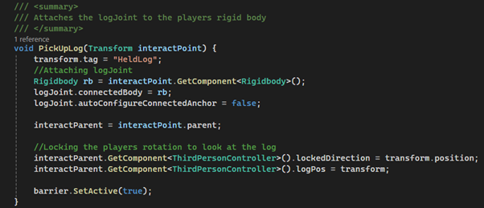
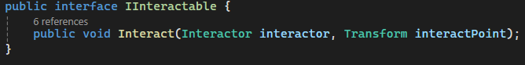
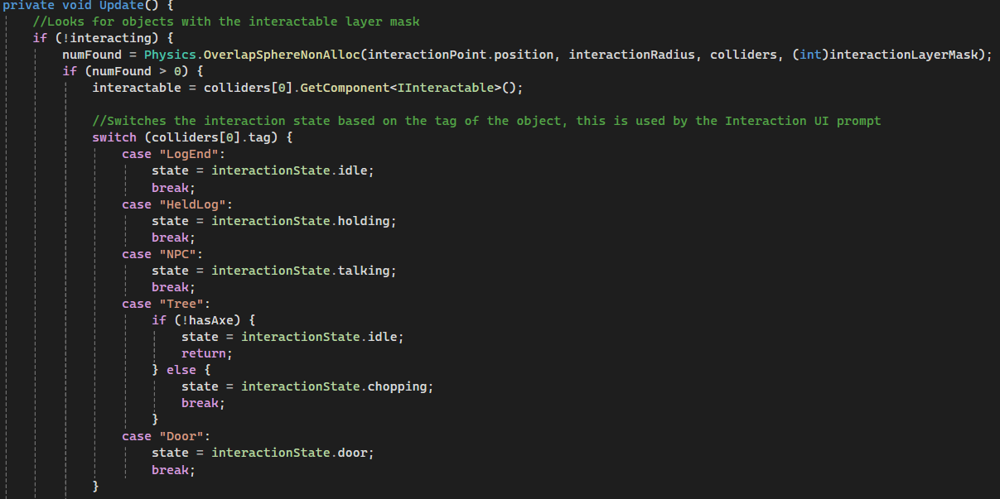

Odd Jobs was my first ever collaborative assignment for university, it was also my first time working in a group to make a game. Our efforts were rewarded with the opportunity to present our game at our university's end of year showcase.
This project was a fun challenge in which I was able to really push my abilities and also gain a lot of valuable experience. This was my first project that I made with a group of people, our group was also multidisciplined so I ended up being the only programmer in the group.
This meant I had a lot of responsibilities as I had to integrate the assets that I was given into the game engine alongside programming mechanics that made the final product feel fun and polished.
This also helped boost my knowledge and experience with project management, as we had to use tools such as HackNPlan to plan out our project sprints as a group and also to delegate and keep track of work.
This mechanic was the one I had to had to work on the most, as I had to figure out a way for an object to be carried by two people at once. I struggled with this, as all the solutions I could find featured only one character holding an object.
The solution I came up with was to have two configurable joints on the object, one on each side. This allowed me to attach the end of the object to a point on the player character. This also meant that if only one person was carrying one of the ends, the other end would not move as it was not attached to anything.
For this project, I also had to develop a scalable interaction system, so that the characters could interact with different types of objects and also NPC's, which would display dialogue when spoken to.
I achieved this by using an interface, with a function that could be overwritten by anything that inherited from it, this allowed me to change the functionality of the interaction with each object without having to completely rewrite the interaction code itself for each object.
Detecting an interactable object was really simple, I would just perform an overlap sphere on the players position and find any objects with the IInteractable interface. From here, I could change the UI that appeared over the players head to display different things depending on the thing being interacted with, for example, the tree would say "Chop!" but an NPC would say "Talk".
